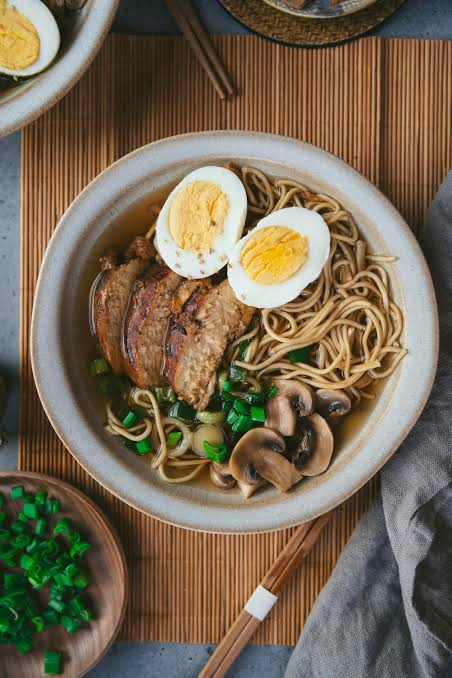

Ramen Recipe
Home

This is an easy and quick 30 minute recipe on how to make brothy ramen noodles!
- Marinate the chicken. Place the whole chicken breasts in a bowl or on a plate and pour over 2 tablespoons of salted soy sauce. Set aside while you prepare the other ingredients.
- Cook the eggs. Bring a pot of water to a boil and cook the eggs for 8 to 10 minutes, depending on how firm you like the yolks. Let them cool slightly, then peel and cut them in half. Set aside.
- Prepare the vegetables. Clean the spring onions and thinly slice them into rings. Set them aside. Clean and slice the mushrooms
- Build the ramen broth. Heat 1 tablespoon of sesame oil in a large saucepan over medium heat. Add the pressed garlic and grated ginger and sauté for about 3 minutes, stirring regularly so they don't burn.
Add the sliced mushrooms and half of the chopped spring onions. Drizzle with another tablespoon of sesame oil and sauté for about 5 minutes, until the mushrooms start to soften.
- Cook the noodles. Meanwhile, cook the ramen noodles according to the package instructions. Drain and set aside.
- Finish the broth. Pour 1 liter (4 cups) of water into the saucepan with the mushrooms and aromatics. Add the remaining 2 tablespoons of salted soy sauce, the miso paste, fish sauce, and chicken stock cube. Stir well to dissolve the miso and stock cube.
- Cook the chicken. While the broth is simmering, heat 1 tablespoon of sesame oil in a large skillet. Add the chicken breasts and drizzle with sweet soy sauce.
Sear over high heat for about 1 minute on each side, then reduce the heat to low. Cover and cook for another 8 to 10 minutes, turning the chicken regularly, until cooked through.
- Add the noodles. Add the cooked noodles to the hot broth and stir gently to combine.
- Assemble the ramen. Divide the noodles and broth between 4 bowls. Slice the chicken and arrange it on top of each bowl, then add the halved eggs.
- Add the toppings. Finish with a sprinkle of sesame seeds, fresh cilantro, and the remaining sliced spring onions. For extra crunch, you can also add some crispy fried onions.